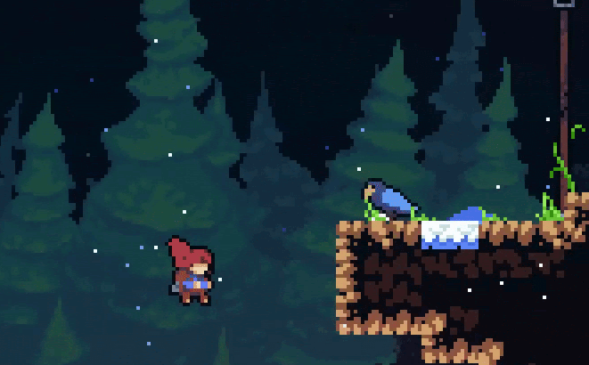
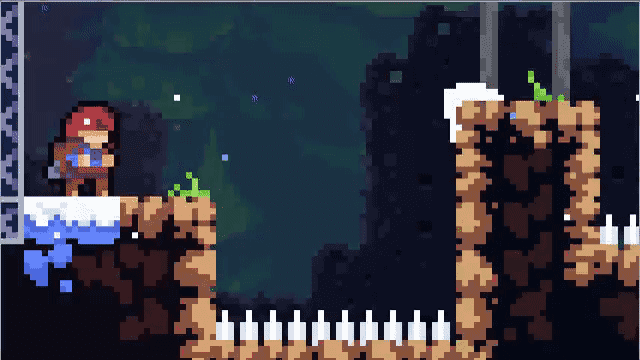
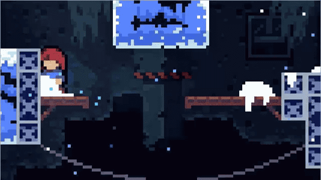
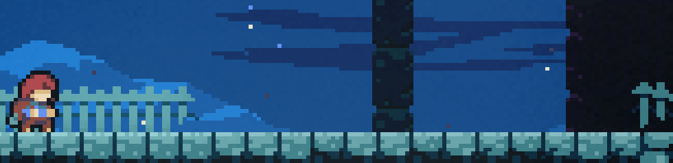
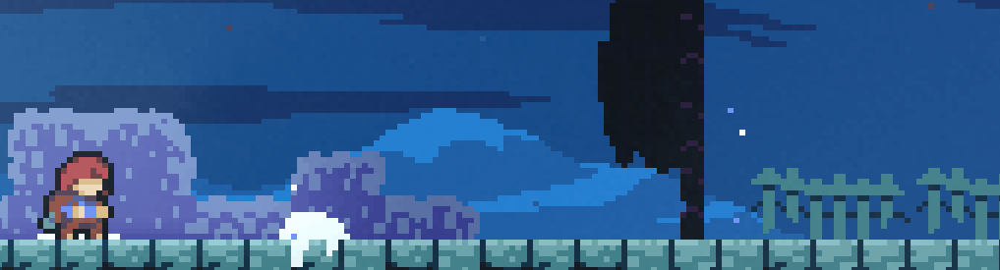
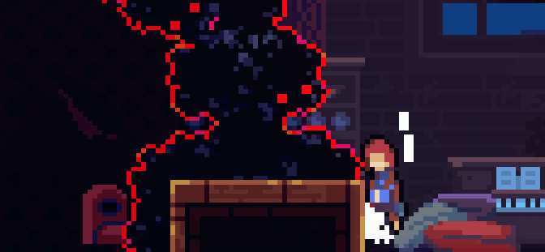
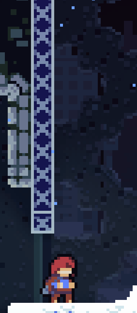
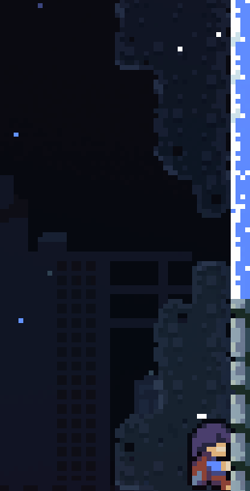

Dash
Um movimento rápido e fluido que permite ao jogador se deslocar instantaneamente em qualquer direção.


A graça de Celeste está em como a movimentação parece simples, mas com extrema profundidade, permitindo variadas formas de completar seus desafios intensos que por mais que sejam dificeis, continuam com a sensação de ser justo com o jogador.

Em Celeste, cada movimento é projetado para ser responsivo e fluido, sendo testado e refinado para garantir que o jogador sempre esteja no controle de sua movimentação ao mesmo tempo que mantém a sensação de dificuldade.
É usada várias técnicas para deixar o jogo satisfatório de jogar:



Um movimento rápido e fluido que permite ao jogador se deslocar instantaneamente em qualquer direção.

Quando o dash e um pulo direcional são usados simultaneamente, o personagem executa um dash mais distante, mas sacrificando altitude.

Funcionalmente igual ao HyperDash, mas é executado no ar, permitindo manter ou ampliar o momentum.

Técnica avançada que permite executar o dash enquanto está agachado, que deixa seu personagem menor e consegue passar por espaços apertados.

Permite ao jogador conseguir verticalidade rápidamente ao realizar um dash grudado ou logo abaixo de uma parede e um pulo logo em seguida.

Ao pular em uma parede sem usar um botão direcional, realiza um pulo para cima, mantendo próximo da parede e permitindo escalar sem usar stamina, é necessário ter controle preciso sobre o personagem timing preciso.